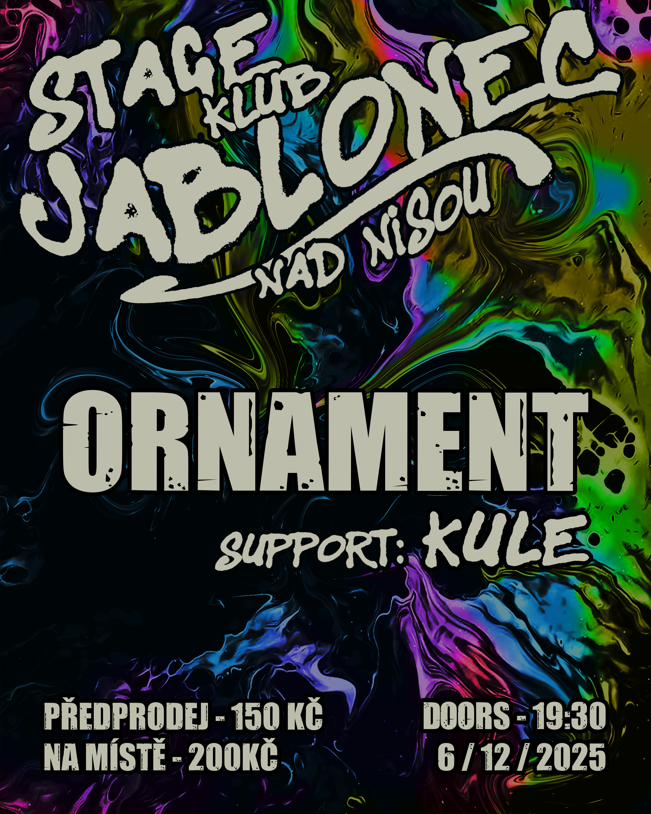
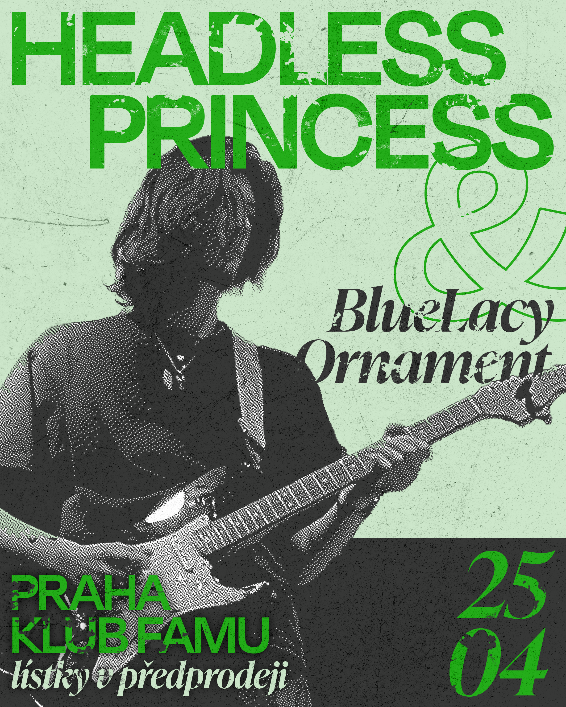
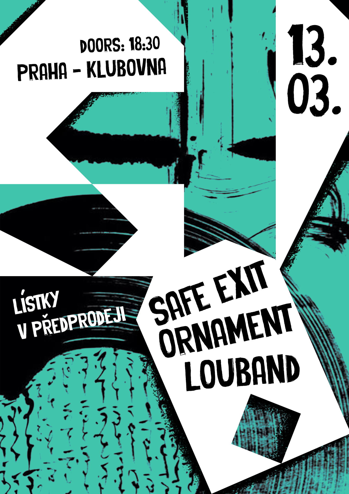
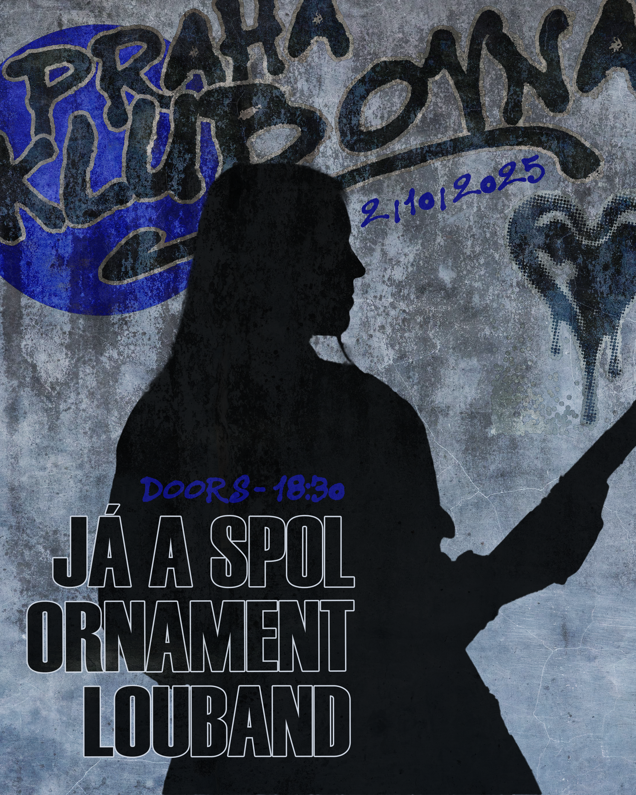
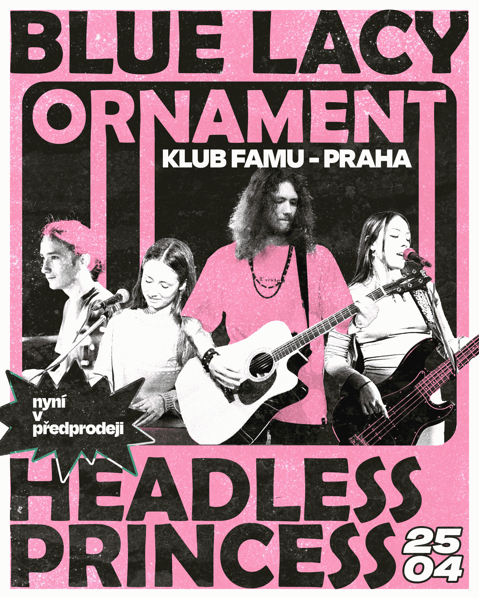
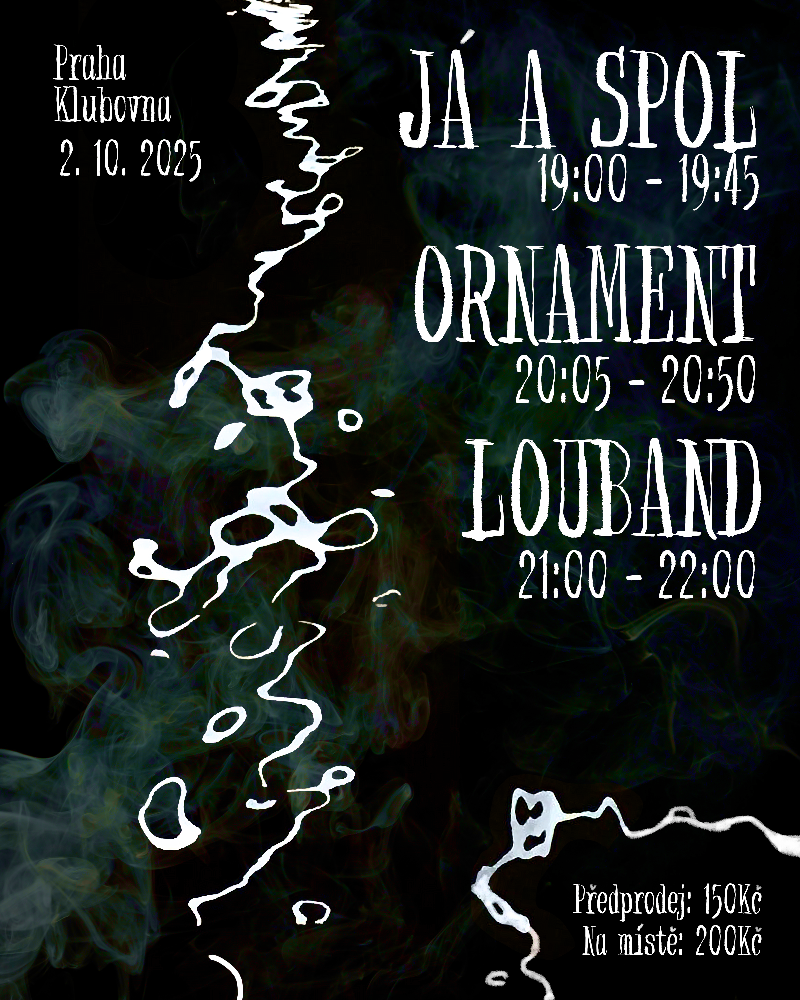
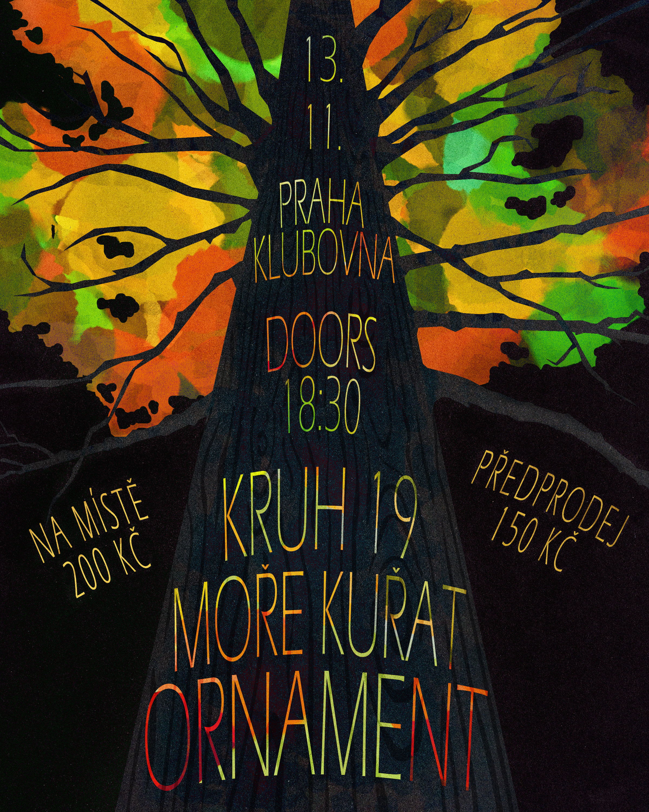
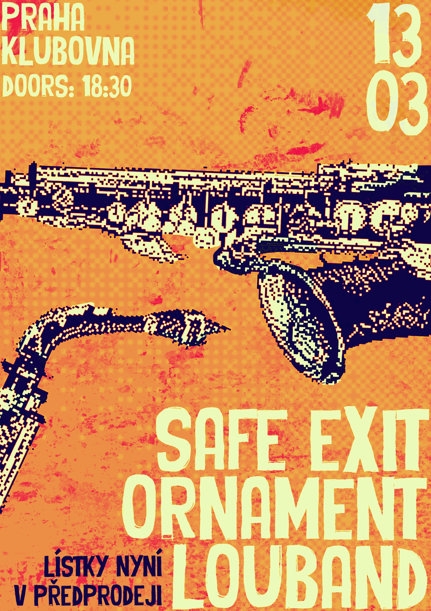

Posters
Posters made in Adobe Photoshop using a graphics tablet.








Animated Poster for Ornament
This poster was made for a long term client of mine - the band Ornament. We decided to go implement a bit more motion into this project to catch the eye of more indie music lovers on social media.
Part of the project was exploration and design of my own typography, as well as a bit of branding. You can learn more about that here:
Ashes to Ashes
It wasn't socially acceptable for women to smoke in the past. Then came a feminist movement called Torches of Freedom which changed that. Later, it was revealed that it was just an advertising move to sell more cigarettes.
This poster is supposed to look like an advertisement for a cigarette company, but the meaning can be ambiguous. It shows a silhouette made out of ashes of a man and a woman smoking together. It represents how even though it is now socially acceptable for both of them to smoke, it is still harmful and they might also turn to ashes because of it one day. The logo that is upside down suggests the shape of a heart around them.


Prayer for Martha
This poster relates to media regulation, mainly censorship. It draws inspiration from the Communist era in Czechoslovakia, specifically in regard to the limitations forced upon artists at that time who weren't allowed to express all of their opinions in their art.
One of them is Marta Kubisova, who is most notorious for her song Modlitba pro Martu (Prayer for Martha). The song advocates for peace and freedom, which consequently led to the ban of this song by the government.
New Woman
Inspired by the collages of Hannah Höch, this piece was made to represent the idea of the “New Woman”. A woman that was energetic, professional and equal to other men.
In that time period, women were still viewed as something less. Even Hannah Höch was looked down upon by her male colleagues.